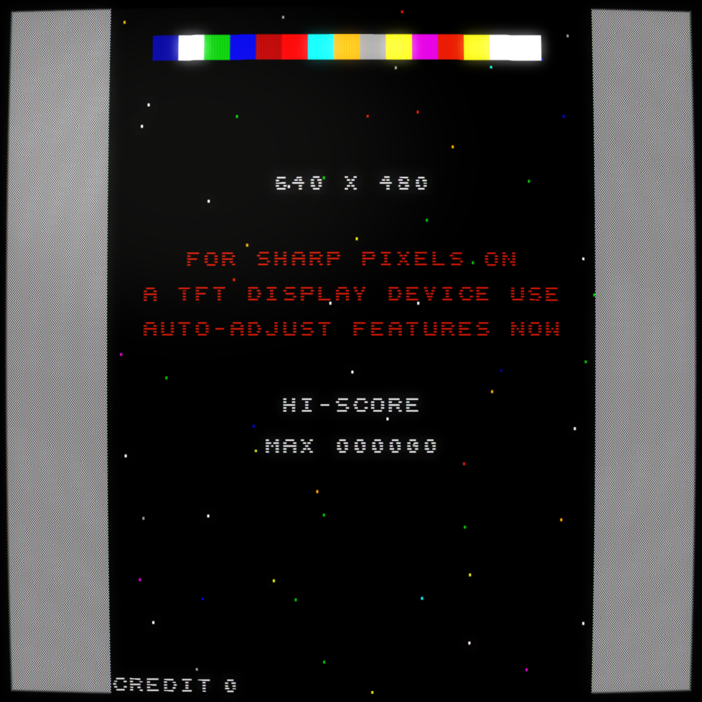
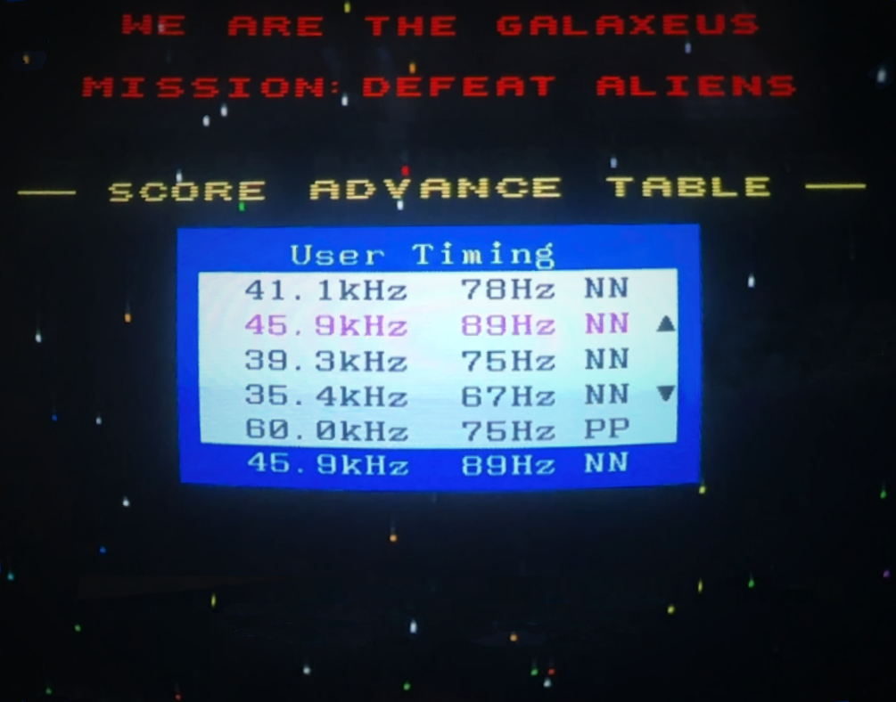

I highly recommend taking a moment to read this; it will show you all available options and may offer some guidance should you encounter any difficulties.
There is no setup required. Just run GALAXEUS.COM at the DOS prompt in the game directory, or double-click GALAXEUS.COM under Windows 3.x or Windows 95/98, and it is ready to play.
*** Keys ***

Galaxeus uses the default MAME keyboard controls:
| Key | Action |
|---|---|
| 1 | 1 Player |
| 2 | 2 Players |
| 5, 6 | Insert Coin |
| Space, Ctrl | Fire Ship's Missile |
| Left, Right | Move Ship |
Galaxeus-specific keys:
| Key | Action |
|---|---|
| F1 | Reset High Score |
| F2 | Service Screen CRT/TFT Calibration |
| ESC | Quit / Rage Quit / Leave Current Screen |
*** Requirements ***
Your system must meet these minimum requirements:
- 80386SX 16 MHz
- Sound Blaster or compatible sound card
- Standard VGA card
Optional features:
- Parallel Port card
- MDA card
All Sound Blaster and compatible cards are supported, including the very first Sound Blaster 1.0.
Please ensure that the BLASTER environment variable is set in your AUTOEXEC.BAT to enable sound. If you encounter silence, check this setting.
For example, if your Sound Blaster is configured to use IRQ 5, I/O address 220h, and DMA channel 1, simply add this line:
SET BLASTER=A220 I5 D1
You can also provide the Sound Blaster settings directly on the command line. For example:
GALAXEUS.COM A220 I5 D1
These settings will be used regardless of whether a BLASTER environment variable is present or not. Any settings provided on the command line override the values defined via BLASTER, though.
Galaxeus inherently detects the presence of an optional MDA card and will then automatically send game telemetry and debug data to the text display. This is a unique feature with a certain coolness factor, and I highly recommend giving it a try.
*** LEDs ***
If LPT ports are found, Galaxeus will assume that there are LEDs connected to the highest Port and set them accordingly:

common LPT adapter
- Pin 2 (Data Line D0) Fire Button
- Pin 3 (Data Line D1) One Player
- Pin 4 (Data Line D2) Two Players
- Pin 5 (Data Line D3) Coin Button (Optional, for free play)
- Ground Pins: Pins 18, 19, 20, 21, 22, 23, 24, 25
13 12 11 10 9 8 7 6 5 4 3 2 1
o o o o o o o o + + + + o
- - - - - - - - o o o o
25 24 23 22 21 20 19 18 17 16 15 14
Warning: Be careful when fiddling around with LEDs on the LPT port, as these ports do not tolerate short circuits and can burn out instantly. Avoid using onboard ports; it is much safer to use cheap add-on cards. While some sources claim that certain ports cannot provide enough current to directly light up LEDs, testing across dozens of cards has shown that every single one was capable of providing the necessary current for modern LEDs.
*** DOSBox variants ***
To view the debug/real time game telemetry in DOSBox-X, start the emulator with a second monochrome display using:
dosbox-x.exe -display green
Generally, Galaxeus won't run as smoothly under DOSBox as it does on native hardware. This is due to a fundamental architecture flaw: both DOSBox and DOSBox-X experience audio stuttering when the emulated frame rate is higher than the monitor's actual refresh rate. This occurs because the emulator links video frames and audio data into tight, interdependent chunks.
With these settings, in the DOSBox-<fork>.conf you're on the safe side if the TFT of the host operating system runs at 60 Hz:
vsyncmode = force vsyncrate = 60
*** IMPORTANT WARNING & DISCLAIMER ***
PLEASE READ BEFORE USING THE TUNING PARAMETERS DESCRIBED BELOW (/C, /V, /H)
Hardware Risk for Vintage Equipment:
DO NOT attempt to use the /C, /V, or /H tuning parameters on old, rare, or valuable collector's CRT monitors. Setting these values too aggressively can physically destroy vintage "fixed sync" CRT hardware. Use ONLY modern, robust multisync CRT equipment for testing!
Compatibility Note for TFT/LCD Displays:
Trying modes above 75 Hz on TFT or LCD displays is not recommended. Most modern flat panels cannot interpret frequencies past 75 Hz and will either go blank, display an "Out of Range" error, or malfunction entirely.
Use these advanced tuning features at your own risk!
*** 86Box ***
Galaxeus runs in 86Box better than under DOSBox, but still not as smoothly as on native hardware. Somehow, there is always some kind of microstutter when emulators try to translate the DOS game's native 67 Hz output to the 60 Hz refresh rate of the host OS TFT monitor - you just can't get rid of it. Another flaw is that 86Box's cycle emulation shows up to a 40% variance compared to real hardware.
However, running Galaxeus at 60 Hz yields a much smoother result on all emulators:
GALAXEUS.COM /C0
The /C switch is the pixel clock selector:
/C0 : 25.175 MHz / 60.0 Hz (available on all VGA cards)/C1 : 28.322 MHz / 67.4 Hz (available on all VGA cards) *game default/C2 : External Clock (some enhanced SVGA may set 34.500 MHz) → std. VGA cards will freeze/C3 : Reserved Clock (some enhanced SVGA may set 40.000 MHz) → std. VGA cards will freeze
*** Exotic real hardware ***
If you are playing on an old portable computer with an LCD or early TFT display, the display controller may struggle with Galaxeus's 67 Hz vertical refresh rate. Again you can start the game with the /C0 switch, which forces the VGA to use a 25 MHz pixel clock and a 60 Hz vertical refresh rate:
GALAXEUS.COM /C0
Note: At 60 Hz, Galaxeus will run slower (about 11%), because its internal timing is synchronized to the display's vertical refresh. But at least it runs. 😉
*** Testing the limits ***
On the other hand, you may want to explore the maximum that your card and display are capable of.
You can increase the H-sync via the /Hx switch. The horizontal total is reduced by x character clocks this way:

MCT-VGA-16 card @rock-solid 89 FPS)
GALAXEUS.COM /H1 will slightly increase it by around 0.71 Hz.
Examples:
GALAXEUS.COM /H4 → Gets you to 70 Hz / 70 FPS on standard VGAGALAXEUS.COM /H10 → Gets you to 75 Hz / 75 FPS on standard VGAGALAXEUS.COM /H18 → Gets you to 80 Hz / 80 FPS on some VGA cards (CRTs only! TFTs will most likely fail)GALAXEUS.COM /H32 → Gets you to 88 Hz / 88 FPS on some VGA cards (CRTs only! TFTs will most likely fail)
HARDWARE LIMITATIONS:
It depends on your VGA card's VRAM speed, CRT Controller and DAC how high you can go. However, all VGA cards I tested reached at least 75 Hz before showing problems. Tests show that one can expect the majority of cards to reach 78 Hz.
During testing, the MCT-VGA-16 (TDVGA 3588 with the TD3588A chipset) was by far the fastest card. This 16-bit ISA VGA pushed a solid 89 Hz / 89 FPS on CRT on my slow 80386SX test bench - completely free of stutter or visual distortion. Delivering that level of performance on a 386SX is extraordinarily fast.
Nevertheless, all TFTs I tested were incapable of interpreting a V-sync faster than 75 Hz. Therefore, I recommend trying to max out the settings only on modern multisync CRTs.
*** Higher Vertical Resolutions ***
GALAXEUS.COM /V1 → Increases the resolution from 544 x 480 to 544 x 481.
GALAXEUS.COM /Vx → Generally adds x scanlines to the standard 480 vertical resolution.
Note on values: Settings where x > 1 should only be used for testing purposes. A resolution of 482 or higher does not leave enough video memory to maintain two full frame pages. As a result, the upper part of the next frame will begin to show up at the lower border of the screen.
*** CPU Speed ***
The program runs a small benchmark at startup and refuses to launch Galaxeus if the system is incapable of running at least 1014 cycles/ms. You can force it to ignore this with the /I switch:
GALAXEUS.COM /I → Ignore CPU benchmark result at startup
This may crash the system if it is too slow to handle the IRQ frequencies. However, you can still give it a try. 🤞
[home/back]